PlayStation 4是索尼电脑娱乐公司推出的家用游戏机。是PlayStation游戏机系列的第四代游戏主机，采用AMD Jaguar 8core处理器。它属于第八世代的游戏机，作为PS3的后续机种，并将与任天堂的Wii U和微软的Xbox One共同在市场上竞争，PlayStation 4采用以AMD为基础的x86-64架构处理器，与使用CELL架构的PlayStation®3不同。
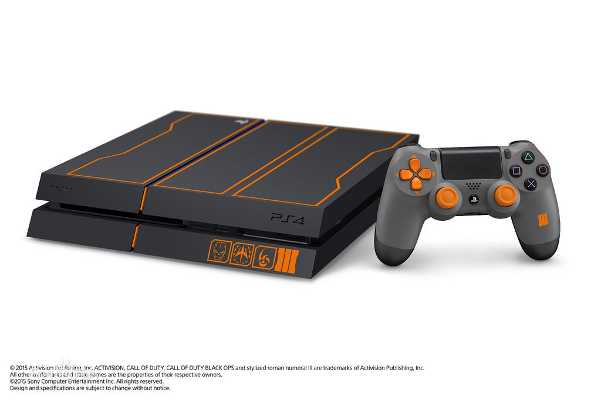更换处理器架构的目的是让游戏开发的过程变得更容易，以吸引更多不同的开发者加入。这样的变更是来自于索尼在PlayStation 3的开发、制造和发售过程中所学习到的经验。PlayStation 4其他重要的硬件特征包括内建8 GB的GDDR5整合式内存、更快速的蓝光光驱，以及专门用来处理音频、影像，以及其它背景服务的定制处理芯片。
在新的应用和服务方面，索尼在智能手机和平板电脑上推出专属应用程序PlayStation App，让这些装置成为第二屏幕以加强游戏体验。索尼也计划推出云游戏串流服务“PlayStation Now”（原GaiKai），将可下载内容与游戏储存于云服务器中。此外，新的控制器上增加了“分享”按钮，将让使用者可以观看其他人游玩过程的串流直播与截图及录制视频。
官方宣称PS4主机的运算能力大约是PS3主机的十倍，游戏画面进一步提升分辨率到1080P、FPS(每秒显示张数)高达60。对比PS3，PS4加入不少特色，例如跨游戏语音聊天功能、转型成真实好友构成的网络以及通过Ustream和Twitch网络串流实况转播游玩画面。据称有更多的PS4机能将会陆续推出。在主机开发过程中，为了避免过于追求性能而使制作游戏软件更加困难的情况的发生，索尼放弃了PlayStation 3原有的设计，重新选择了与个人电脑相同的 X86 构架，使得游戏开发更加容易；但是缺点是与PS3、PS2或是PS1游戏不兼容。
PlayStation®4使用了由索尼与AMD合作开发的APU处理器，整合了CPU、GPU和声卡。 其八核心的cpu是由两个主频为1.6G的4核心CPU组成。 GPU由72个16D浮点运算单元组成（18组，每组4个），浮点运算能力为1.84T/s PlayStation 4配有8 GB的GDDR5共享内存，一改历代游戏机内存小的缺点。 GDDR5内存的主频为1.4 G（等效5.6G），其速度（带宽）为176 GB/s。
PlayStation 4的主要控制器是DualShock 4，通过蓝牙2.1+EDR与主机链接，旧款控制器DualShock™3则无法在PlayStation®4上使用。DualShock™4加入了数项全新的功能，包括正面 配有可按压的双点电容式感应触控板。此外控制器亦支持动态传感，内建三轴陀螺仪和三轴加速器，其震动功能亦有改进。DualShock™4也是第一款正式支持Windows个人电脑的PlayStation®原厂控制器。控制器内建不可拆除的充电式锂电池，容量为1000 mAh。控制器重量约为210公克，尺寸为162x52x98公厘，使用橡胶与塑胶材质增加握持感。 控制器内建有数个输出连接端口。其中的3.5mm TRRS立体声接孔可连接耳机与麦克风，能让使用者同时接收并传送音频。此外控制器上亦配有一个Micro-USB连接端口、一个扩充连接端口，以及一个单声道扬声器。控制器可通过mirco-USB或专属充电座进行充电。 DualShock™4同时也装载了可显示各种颜色的光条。不同的颜色可用来代表不同的玩者，并可作为重要消息的提示之用（例如游戏人物的生命值降低等）。此外光条也可与PlayStation®Camera摄影机互动，让摄影机能通过光条来判定控制器的动作和距离远近。这项功能是以PlayStation®Move技术为基础，既有的PlayStation®Move控制器亦可在PlayStation®4上使用。
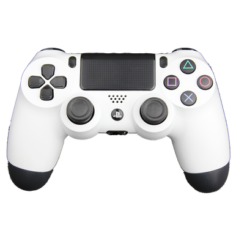
| 主处理器 | Single-chip custom processor CPU : x86-64 AMD “Jaguar”, 8 cores GPU : 1.84 TFLOPS, AMD next-generation Radeon? based graphics engine |
| 记忆体 | GDDR5 8GB |
| 硬盘 | 内置500GB |
| 光学媒体（只读） | BD 6倍速CAV DVD 8倍速CAV |
| 输出╱输入 | Super-Speed USB (USB 3.0) port、AUX port |
| 通讯 | Ethernet (10BASE-T, 100BASE-TX, 1000BASE-T) IEEE 802.11 b/g/n Bluetooth? 2.1(EDR) |
| AV输出 | HDMI OUT端子 DIGITAL OUT (OPTICAL) 端子DUALSHOCK4 手柄参数： |
目前有不少新手PS4玩家会遇上这样的困扰，PS4游戏种类繁多但却不知道选择哪款，毕竟一款游戏也要大几百元钱，万一买了不喜欢的就是浪费。楼主入手PS4已来虽然不是死忠玩家但是接触的游戏也不少，这里向大家推荐几款PS4上的口碑佳作，大家可以根据自己喜欢的类型来选择体验。
神海系列作为PS4独占大作，几乎是每个PS4玩家必入的游戏之一。楼主入手PS4后相继体验了4代盗贼末路、以及DLC失落遗产，神海4在同时期作品中，几乎是地表最强画质之一的游戏，得益于游戏中自带的照片模式随手截下一张图都可以当做壁纸。
除了画面上颇有建树，剧情方面也是引人入胜。人物的性格刻画以及每一帧人物的面部表情都会呈现给玩 家，代入感十分强烈。无论是感情故事、少年回忆再或是剧情的反转都深深打动着玩家，节奏紧凑而不拖沓。
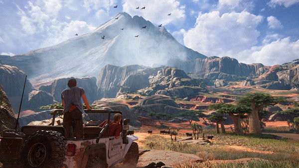
游戏操作方式上，枪战，追车，潜行，攀岩一个都不会少。面对敌人玩家可以选择突突突直接消灭敌人，也可以利用建筑物潜行无声无息的进行刺杀，可以满足不同玩家的风格。
另外在爬墙攀岩场景眼看可能要摔下去了又会补上一段即时演算动画让主角通过一劫，每一次都让人心惊胆战，有着极强的代入感。
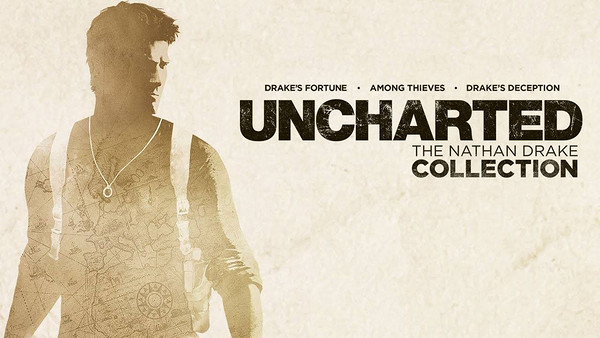
最后生还者与神秘海域都是顽皮狗工作室出品的游戏，游戏是一个丧尸题材的末世设定。相比神海，这款游戏并没有火爆的枪战，追车，爆炸但是剧情上却给玩家多了一份人性的思考，剧情内容值得玩家慢慢体会。
操作方面，这款游戏主要还是以潜行刺杀为主，利用听觉来辨认敌人的位置，丢砖丢瓶全都是技巧，楼主玩游戏一向喜欢突突突，但是在这里不行，有些怪必须用刺杀来解决。
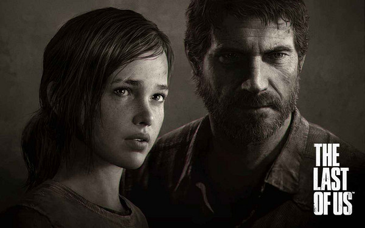
游戏开始界面的音乐非常好听，有趣的是我曾发现国内某款末世题材的文字手游也盗用了最后生还者的BGM，足见这款游戏的知名度。最近E3发布了“最后生还者2”的演示视频，期待值非常高，在2代还没发布之前强烈建议体验第一代游戏。
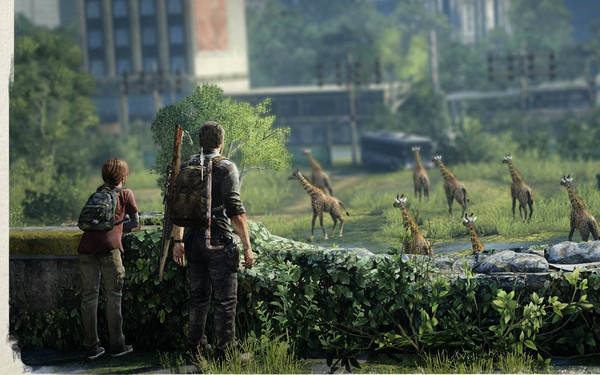
地平线是一款题材新颖的游戏，游戏中高度先进的机械兽和落后的人类文明形成强烈反差。
开放性世界加入了探索，解密，攀爬等元素，极大的满足了游戏的可玩性。画质方面毋庸置疑地平线作为一款开放世界游戏，还维持了4K的极限高品质画质，游戏中光照场景，植物细节，水流痕迹都是细致入微，但是唯一有个槽点，人物的面部表情较为生硬，对于人物塑造来说会造成一些影响。
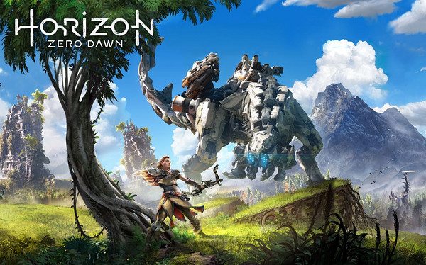
游戏中攻击方式采用弓箭、弹弓以及陷阱等，武器系统有不同属性之分针对不同敌人，并且可以针对敌人的弱点进行针对性攻击。
游戏提供了20多小时的主线任务流程，并且包含了丰富的支线任务，可以让玩家不断探索。喜欢开放世界游戏并且对画质要求较高的玩家千万不要错过。
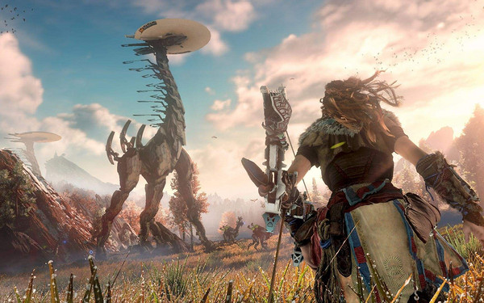
即便没有体验过游戏，大多数人应该都知道战神系列。新战神相较于前几代战神改动非常大，首先故事背景被放到了北欧神话，奎爷不再像以前一样一个人冒险遇神杀神，而是有了自己的孩子相互辅助进行冒险。
在这一作中剧情被重点刻画，通过人物之间的对话以及故事发展，玩家可以深刻了解奎爷以及儿子的性格及心理，并感受父子关系的变化。
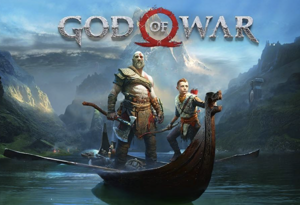
战斗模式游戏一改以前上帝视角而是转变成了过肩视角，在初期提供了斧头作为武器，需要玩家进行瞄准攻击操作，相较以前难度变大，并且可以给奎爷的儿子下指令进行攻击和控制。在游戏主线流程完成后还有大量探索内容以及难度更大的女武神可以挑战。
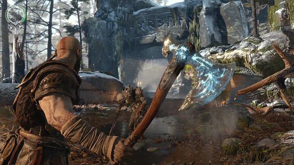
我身边有不少人是因为这款游戏而且购买了PS4主机，可想而知这款游戏的吸引力有多大。不谈情怀光从游戏本身上来说，作为多人共斗类游戏的鼻祖怪物猎人：世界继承了系列的优秀游戏性 并进行了高清化、加入了无缝切换的开放地图、真实有趣的生态系统。
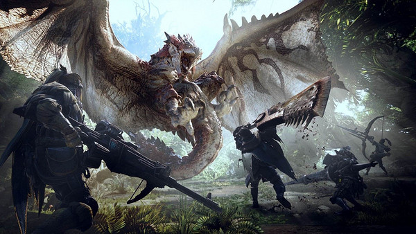
在游戏体验方面进行了史无前例的简化，对于刚刚接触的新玩家也足够友好。
游戏支持四人共同联机狩猎怪物，在单人狩猎过程中如果遇到打不过的怪也可以发出求救信号，让其他玩家来帮助大大降低了游戏难度。另外游戏一直会持续追加新的怪物以及服饰道具元素，保证游戏的可玩性。
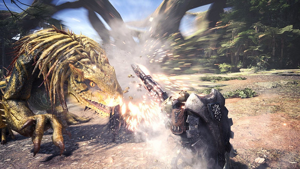
想必这款游戏的知名度似乎都没2B小姐姐高吧，毕竟现在COS圈分分钟给你整个2b小姐姐出来，屁股什么的我都是不知道的，游戏呢我也是因为接触了试玩版后才入正的。起初楼主以为这就是一款动作游戏，华丽的动作设计，爽快的打击感。
当你深入游戏后你会发现却是一款RPG，游戏中另有多周目设计每个周目都是不同的视角让玩家了解不同的剧情。战斗场景除了正常的3D视角还会穿插横版卷轴式的战斗和射击方式，不过玩到后面依旧是重复的刷怪可能会略显枯燥。
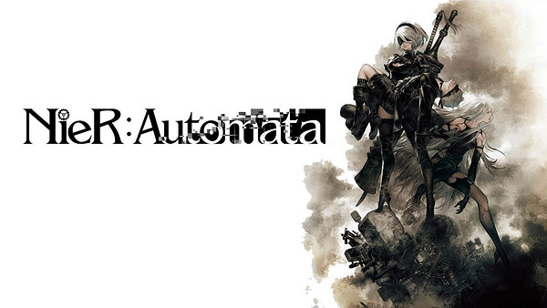
本作支线任务也是一大亮点，每一个支线都是一个小故事，玩家做出不同的选项会带来不同的结果，可以说支线在这款游戏中并不只是为了增加游戏时长，更多是给予玩家的思考。
BGM也是游戏的亮点之一，音乐与画面的配合的简直是天衣无缝，买音乐送游戏这句话一点都不错。
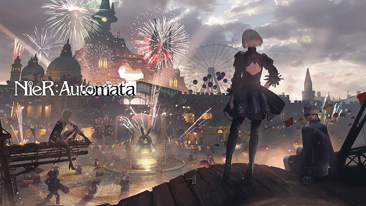
这是一款中国制作人陈星汉的游戏作品，第一次了解这款游戏还在在知乎的推荐下，据说这是一款能够震撼人心的作品，虽然没有非常高级的技术，但是不可否认这款游戏足够诠释唯美一词；除了画面本作的BGM也是亮点之一，在不同场景配上不同音乐，简直是一种享受。和传统游戏不同，在风之旅人中，用户可操作的内容不多，要做的就是不断前进，让围巾变得更长飞得更远，并不复杂的操作方式意味着风之旅人的受众群体更广。
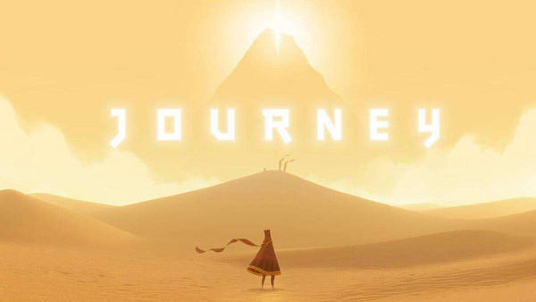
整个游戏流程不会超过两个小时，你一个人穿过无人的沙漠，地下世界，冰寒的雪地，最终冲破云层登上山峰。联网状态下你会遇到另一个玩家，可以一起前行互相激励。平淡无力的语言可能无法表达出这款游戏的给人带来的震撼，但请不要错过这一款如此优秀的游戏！
这是一款电影交互式游戏，相比传统的游戏更像是看一场电影大片，而主角每一步操作都由玩家来决定选择，不同的选择会影响剧情后续发展，蝴蝶效应由此产生。多结局游戏在很多作品中都有，但是底特律每个小章节都是环环相扣，最终结局的数量远超你想象，这也让喜欢探索的玩家会去尝试不同的选择，游戏时长甚至可以超过40小时。
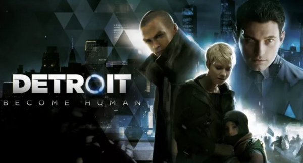
游戏的背景设定在未来世界，玩家将扮演三个不同角色的仿生人，分别以他们各自的视角来面对不同游戏场景的剧情发展，与普通剧情选择类游戏不同，底特律中有很多场景的选项会直击玩家心底，关乎人性思考非常有代入感。除了底特律还有类似的超凡双生、暴雨等电影交互式游戏也是不容错过。
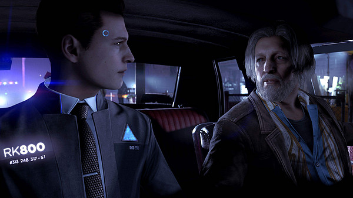
除了以上游戏PS4不乏其他高质量作品，比如战地系列、刺客信条系列、黑魂系列、女神异闻录5，这里就不再展开细说，如果大家还想了解更多好玩的游戏，也可以自行搜索PS4独占游戏，一般来说独占作品的质量都不会差